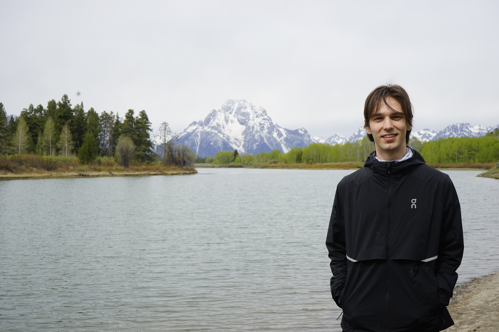

I am a Ph.D. candidate in the department of Operations Research and Information Engineering at Cornell University, where I am fortunate to be advised by Prof. Gennady Samorodnitsky.
I work in probability theory, and I am particularly interested in understanding under what conditions a random system exhibits "typical" versus "atypical" behaviour. In my current work, this takes the form of characterizing when heavy-tailed stochastic processes exhibit long-range dependence, but I also have work on characterizing self-similarity (and related symmetries) in stochastic processes (and beyond!).
| fs452@cornell.edu | |
| Affiliation | Department of Operations Research & Information Engineering, Cornell University |
Research
My current work is concerned with understanding how long-range dependence manifests in heavy-tailed stochastic processes. Heavy tails appear in systems where extreme values occur relatively frequently and long-range dependence appears in systems where memory persists for a long time. Classical approaches for detecting long-range dependence are usually based on covariances, but these are often unavailable for heavy-tailed processes since their marginals may not have finite second moments. My work focuses instead on identifying phase transitions in the asymptotic behaviour of functionals of these processes that can be understood as a sign of long-range dependence.Publications and Preprints
Limit Theory of ℓp Norms of Stable Processes Driven by Dissipative Flows
Filip Stojanovic, Gennady Samorodnitsky.
- Manuscript in preparation. (draft available upon request).
Limit Theory of Large-p ℓp Norms of Stable Processes Driven by Conservative Flows
Filip Stojanovic, Gennady Samorodnitsky.
- Manuscript in preparation.
Another Perspective for Lie Symmetries With a View Towards Scaling Limits
Filip Stojanovic, Pierre Patie.
- Manuscript in preparation.
Invited Talks
The ℓp Norms of Stationary Stable Processes
- Cornell Probability Seminar, October 2026.
- Banff International Research Station, August 2026.
Another Perspective for Lie Symmetries With a View Towards Scaling Limits
- IMS, National University of Singapore, August 2024.
Teaching and Service
Teaching
- Cornell University — ORIE 3500 (Engineering Probability & Statistics II), TA, Fall 2026.
- Cornell University — ORIE 5610 (Financial Engineering w/ Stochastic Calculus II), TA, Spring 2023,24,26.
- Cornell University — ORIE 5630 (Operations Research Tools for Financial Engineering), TA, Fall 2025.
- Cornell University — ORIE 5650 (Quantitative Methods of Financial Risk Management), TA, Spring 2025.